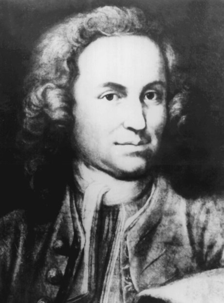
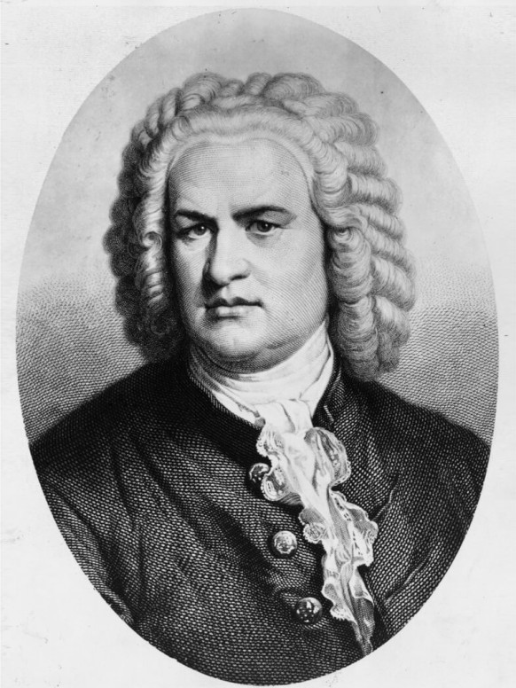
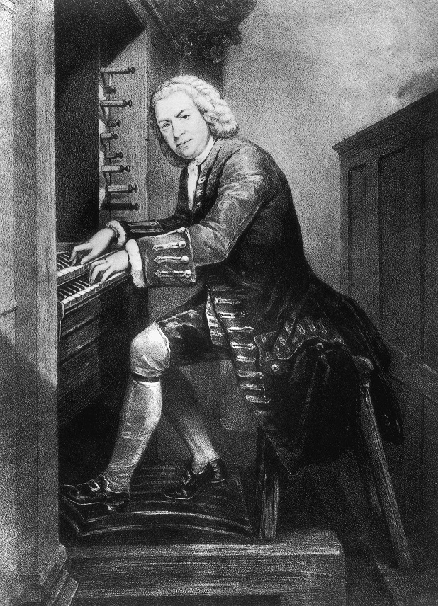

Johann Sebastian Bach (1685-1750) was music's most sublime creative genius. Bach was a German composer, organist, harpsichordist, violist, and violinist of the Baroque Era. Johann Sebastian Bach was born on March 21st 1685 in Eisenach, Germany. The young Bach was offered a choral scholarship to the prestigious St Michael's School in 1699.
1703 saw Bach become the organist at St Boniface's Church in Arnstadt - a role that saw him on a regular salary and expanding his skills at the keyboard. Bach composed the cantata Gott ist mein König in 1708 - he was paid handsomely, and it helped him cement his early career.
The Brandenburg Concertos were composed in 1721 as a sort-of musical job application for the Margrave Ludwig of Brandenburg - it was unsuccessful. In his later years Bach faced harsh criticism. During the 1720s and 1730s when he was composing his most important works - the Passions and the Goldberg Variations among them - a new Italian style invaded Germany, making his work appear outdated.
The Well Tempered Clavier, a quintessential student text, was finished in 1744 and comprised two volumes of piano music in every musical key. With the notable exception of opera, Bach composed towering masterpieces in every major Baroque genre: sonatas, concertos, suites and cantatas, as well as innumerable keyboard, organ and choral works.
Bach died on July 28th 1750 in Leipzig. It is still disputed whether it was a botched eye operation or a stroke caused by pneumonia were to blame for his death. Bach's popularity was decaying until 1829, when Mendelssohn performed the St Matthew Passion and rescued Bach from oblivion.
Little personal correspondence has survived to provide a full picture of Bach as a person. But the records do shed some light on his character. Bach was devoted to his family. In 1706, he married his cousin Maria Barbara Bach. The couple had seven children together, some of whom died as infants. Maria died in 1720 while Bach was traveling with Prince Leopold. The following year, Bach married a singer named Anna Magdalena Wülcken. They had thirteen children, more than half of them died as children.
Bach clearly shared his love of music with his children. From his first marriage, Wilhelm Friedemann Bach and Carl Philipp Emanuel Bach became composers and musicians. Johann Christoph Friedrich Bach and Johann Christian Bach, sons from his second marriage, also enjoyed musical success.